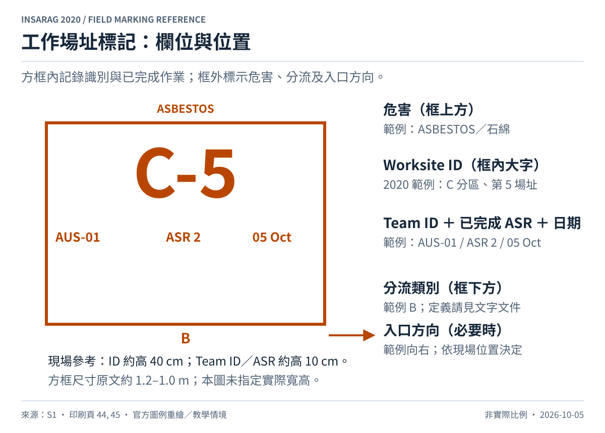
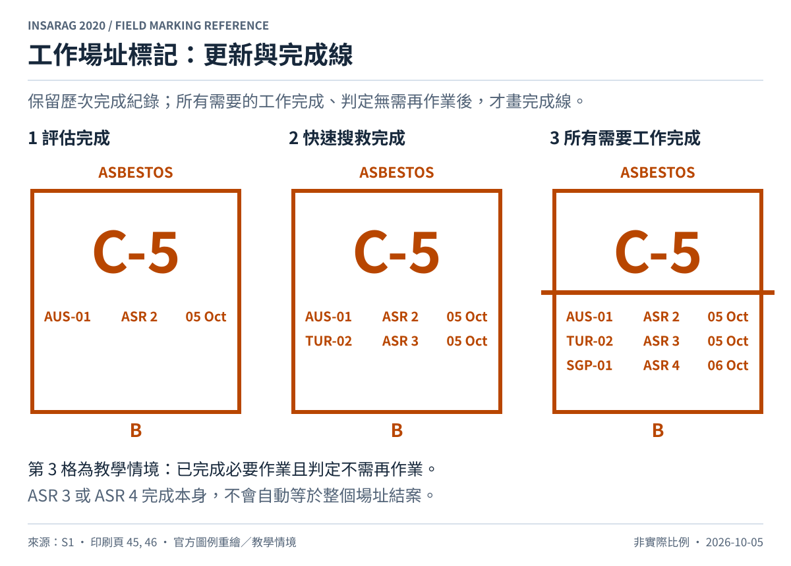
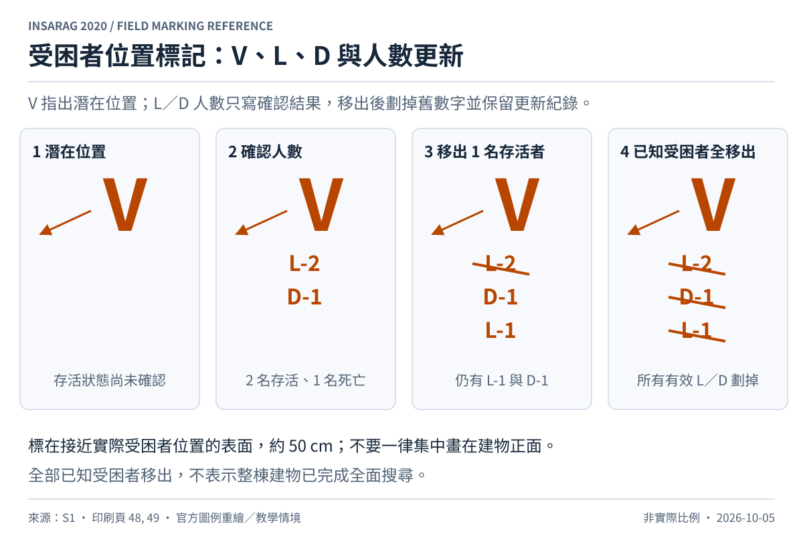
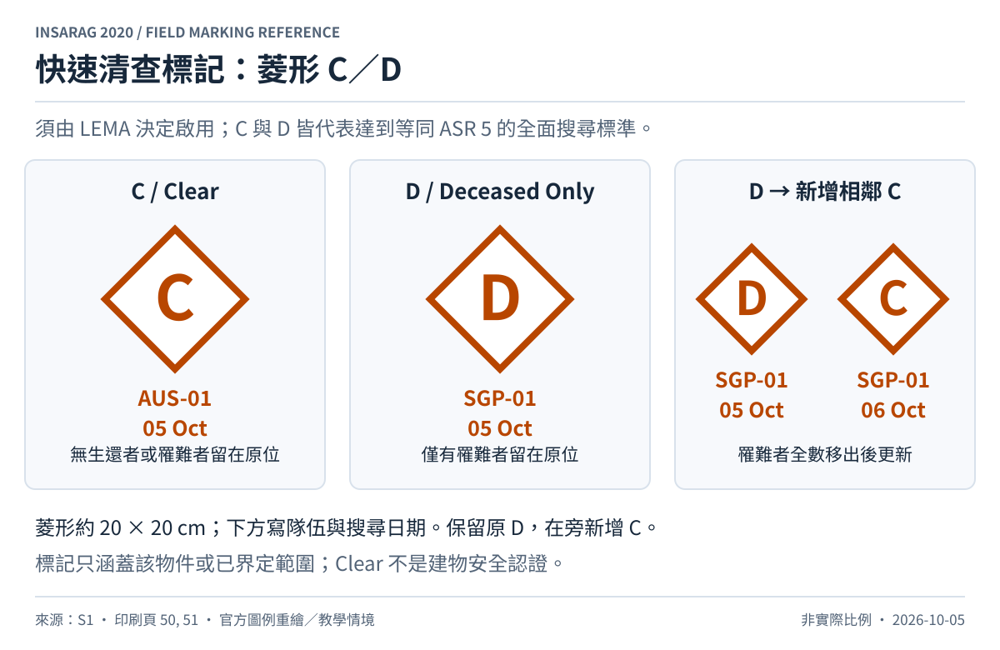
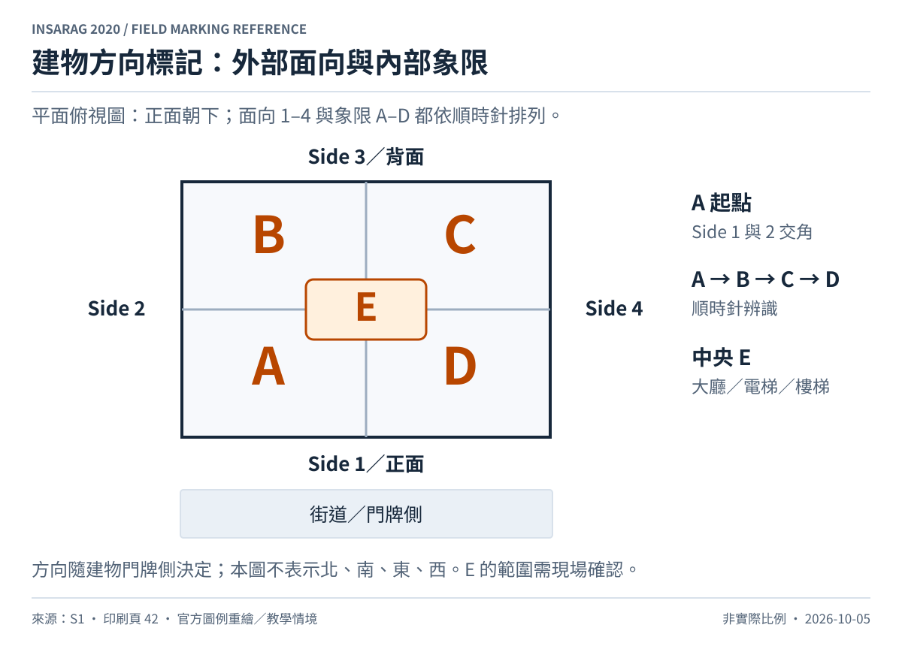
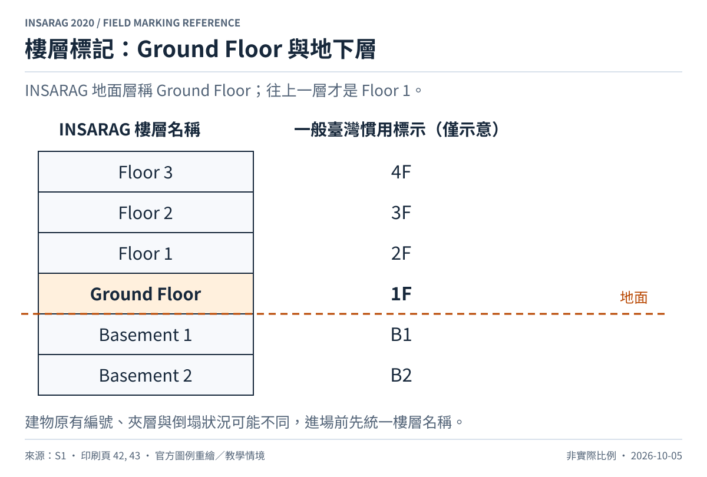
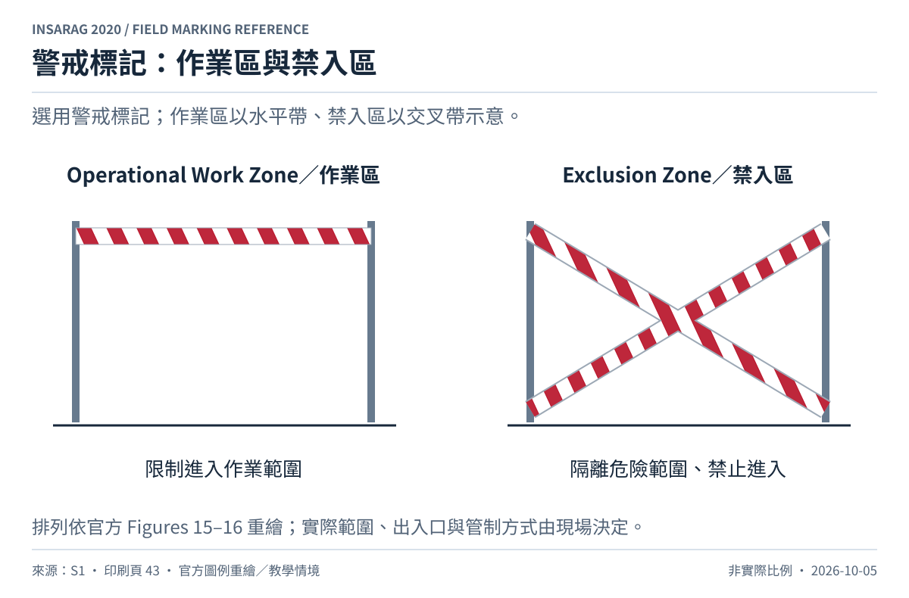
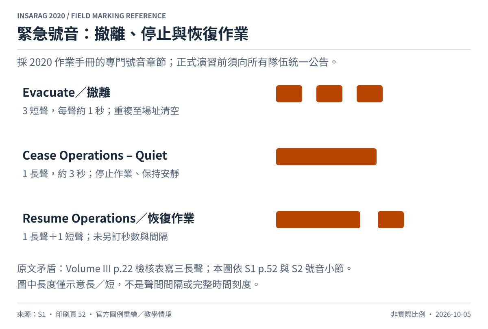

INSARAG 標記方式圖庫
8 張可編輯 SVG，附規則解說及官方頁碼。基準為目前生效的 2020 版；核對日期：2026-10-05。新版預定於 2027-01-01 生效。
01 工作場址標記：欄位與位置


02 工作場址標記：更新與完成線


03 受困者位置標記：V、L、D 與人數更新


04 快速清查標記：菱形 C／D


05 建物方向標記：外部面向與內部象限


06 樓層標記：Ground Floor 與地下層


07 警戒標記：作業區與禁入區


08 緊急號音：撤離、停止與恢復作業
